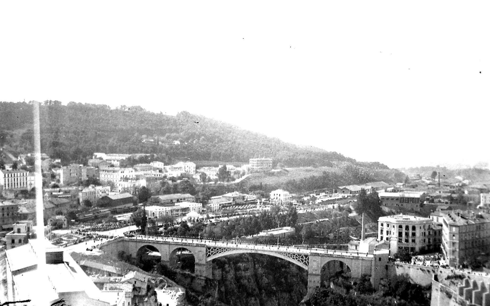
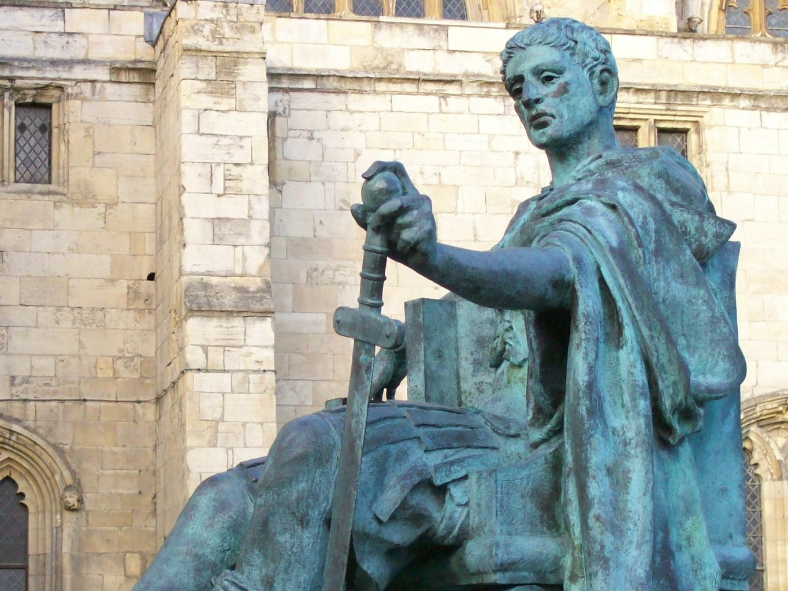
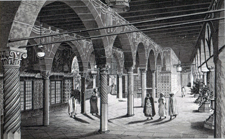
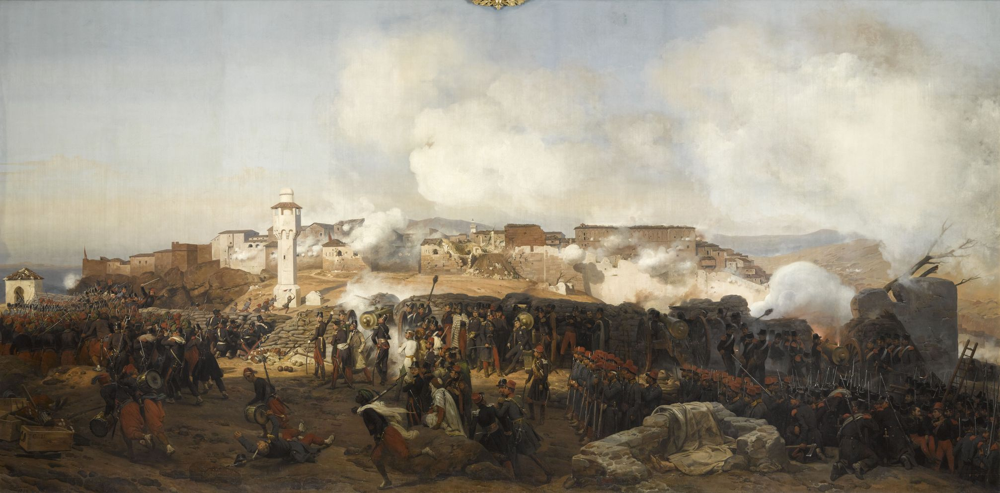
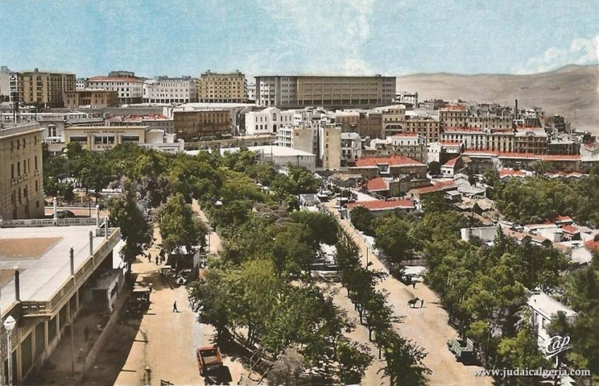

Période Antique
À l'époque romaine, la ville portait le nom de Cirta et jouait un rôle crucial dans la région...
En savoir plus

Période Médiévale
Constantine a connu des siècles d'instabilité après la chute de l'Empire romain...
En savoir plus

Période Ottomane
Constantine a prospéré sous l'Empire ottoman, avec des influeces visibles encore aujourd'hui...
En savoir plus

Période Coloniale
La ville est tombée aux mains des Français en 1837, marquant une nouvelle ère de son histoire...
En savoir plus

Constantine Moderne
Depuis l'indépendance, Constantine est devenue un centre économique et culturel majeur...
En savoir plus